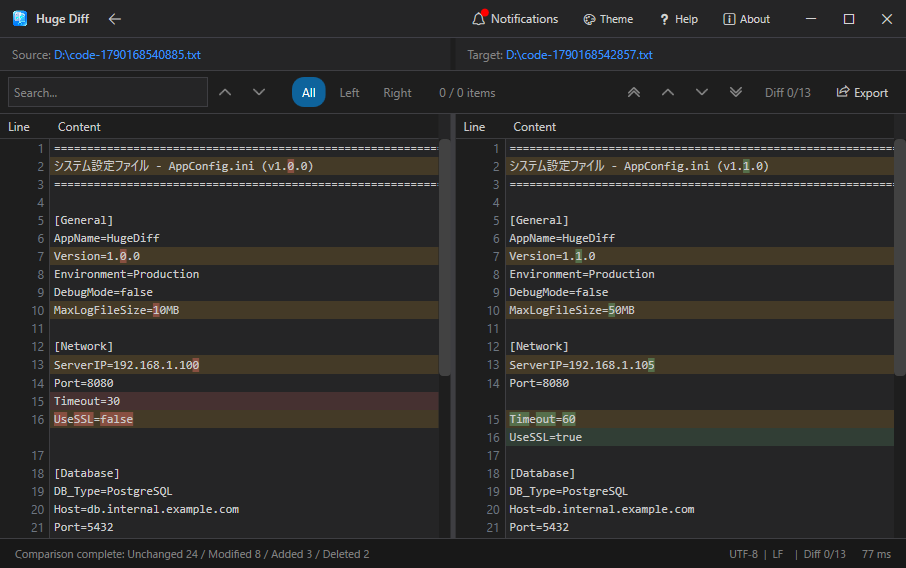
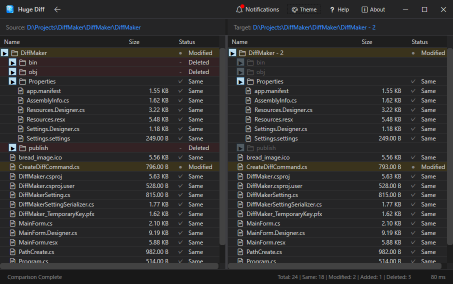
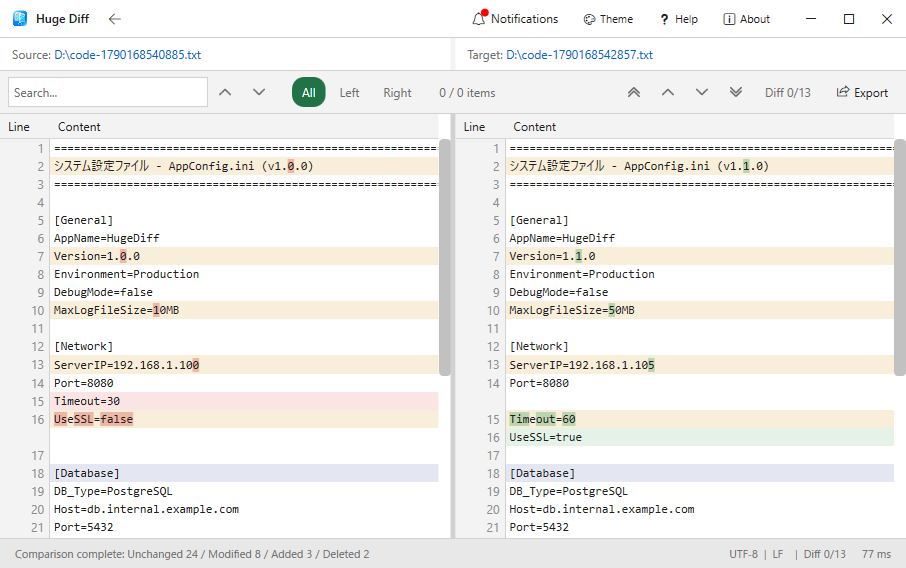

Load GB-scale data in seconds.
A diff tool built for massive text files.
Say goodbye to frozen screens when loading huge files. By leveraging UI virtualization and data streaming, HugeDiff maintains smooth rendering and scrolling—even when comparing logs with over a million lines.
All file comparisons and parsing are executed entirely on your local machine. HugeDiff never sends your files to external servers, making it completely safe for highly sensitive and confidential data.
* The application only performs a brief network check on startup to fetch update notifications. Your file contents are never transmitted.



Because HugeDiff is an independently developed application without a commercial code-signing certificate, Windows Defender SmartScreen may display a warning ("Windows protected your PC").
| Supported OS | Windows 10 / 11 (64-bit) |
|---|---|
| Target Formats | Text files, Source code, Folders (Directories) |
| Conditions | Fully functional in offline environments |